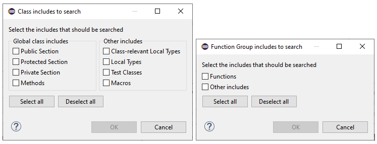

The ABAP Code Search is a tool which offers the possibility to search in ABAP source code for a given string.
The most important features provided by the ABAP Code Search are:
works for R/3 environments as well as for S/4
allows a detailed scope definition with filtering by object type, application component, etc...
supports specific search patterns with regex and multiline search
It is integrated in the eclipse Search dialog, which can be called via
STRG
+
H
or the eclipse menu Search ➠ Search...
The User Interface
Figure 1: The Code Search Dialog
The Code Search Dialog Page is structured into the following main
sections
Search Pattern (mandatory)
Object Selection
Additional Settings
Search Pattern
In the text area you can enter the search pattern. It can contain one or more patterns. In case of multiple patterns, each pattern has to be entered in a separate line.
Additionally you have 2 options to configure the search pattern
Ignore Case When this option is set the lower/upper case of the source code will be ignored
Regular Expressions By setting this checkbox you specify that the entered pattern uses regular expressions
Object Selection
The object selection can be defined using 2 fields:
Object Name A text input control to enter one or multiple object names to restrict the scope. Wildcards are supported.
The end of each object name is automatically expanded by a "*" if it does not end with "\<". Multipe object names are split by a space
Filters A text control for entering the filters which will restrict the scope. This field provides assistance for
the following criteria: type, owner, package, applicaton component and date of creation. All filters
also provide further content assistance to see which options are available (see the following
image)
Figure 2: Content Assist for options for a
filter
Tipp: The filter control can also be used to exclude objects from the scope by using ! as the negation sign. E.g. You can exclude objects of type class by using by using type:!clas
A more detailed configuration of the scope objects is possible for classes and function groups because these objects contain different includes. By default all includes associated with classes and function groups will be scanned
during the search. You can explicitely specify which includes should be scanned clicking on the link behind the Selected radio button.
For classes you can decide between 8 types of includes and for function groups you have 2 options.

Figure 3: Content Assist for options for a filter
Additional Settings
Additionally you have 5 options to configure the behavior of the search
Ignore Comment Lines If this checkbox is set the system will not search for the entered pattern in comment lines
Multiline Search By setting this checkbox you specify that each source code object will be searched as a whole.
That way it is possible to find patterns that span multiple lines.
If the checkbox is not set the system will search only for matches which contain the pattern in a single line.
Single Pattern mode As a default the search result will contain the source code files which contain at least on line from the search pattern.
By setting this checkbox means that the whole content of the search pattern text area is considered as one pattern ( relevant for multiline pattern).
Further configuration setting for this option is available in the General Settings
Match All This checkbox is only relevant if the pattern contains more than one line. If this checkbox is set the system will search for source code files
which contains all patterns listed in the search pattern text area without considering their order. If this checkbox is not set the system will execute an OR search between all lines
of the pattern individually
Sequential Matching Checkbox is only relevant if the pattern contains more than one line. If this checkbox is set the system will search for source code files
which contain all patterns listed in the search pattern text area considering their order.If this checkbox is not set the system will execute an OR search between all lines
of the pattern individually
General Settings
In the preferences menu you have the possibility to configure the following settings:
Figure 4: General settings
filter
Max. number of objects to search in a single request this option allows you to control the number of development objects which should be scanned
in a single search request. A search request is not the same as the whole search run.
A search run is split into multiple search request(see The Search Result View for more details )
Concatenate lines of the search pattern with '\n' for regulor expressions This option is relevant if the entered pattern has multiple lines and
you have activated the options: Regular Expressions and Single Pattern Mode. By activating this option the system will automatically enhance
the entered pattern with a new line character after each line of the pattern and consider it a single pattern for the search.
A recommandation to use this option deactivated is that if you structure very complex patterns you can devide them in different lines
for a better overview but you still want it to be considered a single pattern
Project Specific Settings
In the preferences menu you have the possibility to configure the project specific settings:
Figure 5: Project specific settings
filter
PCRE(Pearl compatible regular expressions) specific options:
Note: This option is only active for systems higher or equal to 7.55.
Disable Extended Mode on a default basis the extended mode is activated and you have to escape the white spaces in your pattern.
If you don´t want to do that you activate this option and the spaces entered in the pattern are considered as they are
Enable Single Line Mode If this option is enabled the "." will also match the new line character during the search.
Enable Parallel Processing by activating this checkbox the system will execute the search with parallel processes.
Depending on the workload of the system the search will occupy a maximum of 10 processes if available.
Server Group you can choose an existing server group which will be considered for the parallel processing.
A validition of the entered value is available.
The Search Result View
Retrieval of the Search Results
As the search has to process a high number of source code objects (depending on the scope definition) the result list is build up incrementally.
This way the user gets to see a part of the result, even if the search run is not finished yet. The objects in scope are split into multiple packages. The size of the packages
can be set in the properties. The search will enhance the result tree with the found matches after each package.
As long as the search is running a progress indicator in the eclipse status bar is informing about the completion level in percentage.
In the extended toolbar of the search result you can find the Runtime Information of the search run. This overview shows how many objects
have been scanned and the time needed for scan.
Figure 6: Query Runtime Information
Working with the Search Results
Once a search returns some results they are displayed in the
Search View. As a default the matches are grouped by the main object (e.g. Function group, class) and the object where it can be found ( e.g function module, method).
For each match there are several options available
Open the object in the corresponding eclipse editor (if
one is registered for the type) and navigate to the line which contains the match
by double clicking on it
Navigate to the location of the next match via the context menu option Next Match
Navigate to the location of the previous match via the context menu option Previous Match
Select one or multiple matches and choose the context menu option Delete Selected Matches to remove them from the current result list.
When refreshing the search result screen, the search is executed once again and the matches will be visible again in the result list
The Remove All Matches is used to delete all matches from the result list. In case that this option is triggered while the search run is still processing,
only the current data from the result list will be deleted. The matches returned by the search after triggering this option will be displayed regularly
The Copy options, copies the text of the match in the clipboard
Figure 7: Context Menu for a one node in the result view
Tipp: If you want to cancel the processing of a search request you can use the button Cancel Current Search from the toolbar of the search result view.